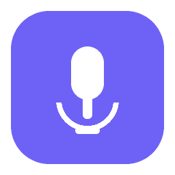

Types where the cursor is
No clipboard dance. If the window cannot take keystrokes, Dicta copies the text and says so.

DictaDictation at the cursor, not in a chat box
Dicta turns speech into text in whatever field already has focus — your editor, your mail client, a ticket. No window to switch to, no text to copy across.
curl -fsSL https://raw.githubusercontent.com/4nddrs/dicta/main/install.sh | bash
Dicta ships with a 140 MB English model so it works with no network and no account. It is fast and it is private. On a laptop microphone, in a café, or with an accent it does not recognise, it drops words.
Paste an OpenAI key and Dicta uses a much larger model instead. Same shortcut, same card, better text. Clear the field and it goes back to the one on your computer.
| Model | Word error rate | Price | Needs internet |
|---|---|---|---|
| Bundled model | Fast, free, drops words on noisy audio | — | No |
| gpt-transcribe | ~3.3% | $0.0045 / min | Yes |
| gpt-4o-transcribe | ~4.0% | $0.006 / min | Yes |
| gpt-4o-mini-transcribe | ~4.5% | $0.003 / min | Yes |
Error rates are third-party measurements (AA-WER v2), not ours. Dictating twenty minutes a day costs about two dollars a month at the top row. Dicta picks the best model your key can actually reach, so a restricted OpenAI project still works.
Whatever you were already typing in. Dicta remembers where the cursor was, even if you switch windows.
A small card appears at the bottom of the screen, with the waveform and a timer.
CtrlShiftSpace
Or press the shortcut again. The text is typed into the field and the card closes.
One Ctrl+Z undoes the whole dictation.
No clipboard dance. If the window cannot take keystrokes, Dicta copies the text and says so.
Two seconds of silence ends the recording. Ninety seconds is the ceiling, so a stuck microphone cannot run forever.
Model access differs per OpenAI project. Dicta asks once per start which model the key can use, and never locks itself onto a fallback.
A bad key, a project without access to a model, and a permission problem are three different messages, because they are three different fixes.
The text arrives as ordinary typing, so the field’s own undo removes it in one step.
A tray icon, a hotkey, no window. It does not steal focus while you dictate.
Nothing leaves the computer. The only network request Dicta makes is the one-time download of the English model on the first launch.
Each recording is uploaded to OpenAI for transcription. OpenAI’s API terms say API data is not used for training; retention for abuse monitoring is described in their data policy. The recording is not stored by Dicta.
dicta-settings.json on your own disk.One command. It downloads the build for your computer, installs it under ~/.local, and starts it.
curl -fsSL https://raw.githubusercontent.com/4nddrs/dicta/main/install.sh | bash
Running it again upgrades in place and keeps your settings, including the key.
On Linux, Wayland needs wtype and wl-clipboard; X11 needs xdotool and xclip.
The microphone uses parec or arecord.
Download the folder from the latest release and copy it whole to the PC — not only
Dicta.exe. Put it somewhere your user account can write, such as
%LOCALAPPDATA%\Dicta. The model, the tray icon and the settings file live beside the exe.
Windows 10 or 11, 64-bit. Allow microphone access for desktop apps.
Open the tray icon, choose OpenAI key…, paste the key, and click Save. To go back to the local model, clear the field and save.
dicta uninstall
That stops Dicta and deletes the app, the model, the settings and the log. On Windows, quit from the tray and delete the folder.
No. Without a key it transcribes on your computer and works offline. The key only improves accuracy.
Dicta is free to run locally. With a key you pay OpenAI per minute of audio — around two dollars a month for twenty minutes a day.
It is built for English. With the bundled model that is all it does. With an OpenAI key the model can handle more, but the app is tuned and documented for English.
A key that authenticates can still lack access to a model, and the project behind the key is what grants it. Dicta tells those two failures apart so you fix the right one.
Technically yes, and small teams do it. Each person pastes it once into their own install.